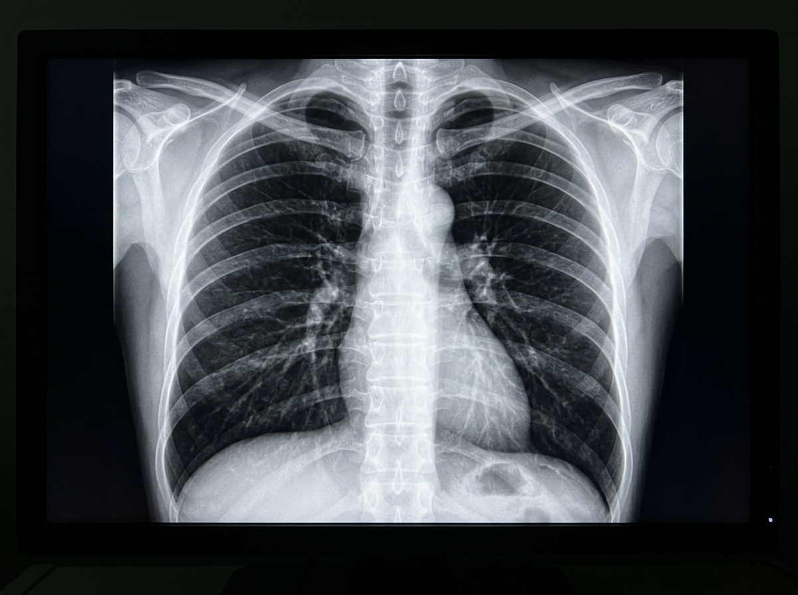

STEP 01
1. Patient Consultation
The physician conducts initial patient intake, documenting symptoms, physical examinations, vital metrics, and medical history within the hospital health record.
An explainable second-opinion assistant that combines medical images, clinical notes, and test information to support better-informed clinical decisions.

A structured four-step clinical pathway that seamlessly integrates AI analysis into standard hospital workflows without interrupting physician judgment.
The physician conducts initial patient intake, documenting symptoms, physical examinations, vital metrics, and medical history within the hospital health record.
Standard diagnostic imaging (Digital Radiography, CT, or MRI) is acquired by radiology technologists and sent securely to the hospital PACS repository.
MediSight AI analyzes imaging features in concert with clinical notes, highlighting potential regions of concern and generating calibrated confidence indicators.
The attending doctor and radiologist review AI-flagged insights, cross-reference patient labs, and formulate the final definitive clinical diagnosis and treatment plan.
Designed specifically for clinical environments, combining radiological precision, natural language clinical notes, and data governance.
High-precision computer vision trained on standardized radiology benchmarks to assist clinicians in spotting subtle opacities, lung consolidations, cardiomegaly, and localized lesions.
Medical images are rarely interpreted in a vacuum. MediSight AI synthesizes radiological scans with doctor clinical notes, patient vital metrics, and recent lab results for holistic context.
Clinicians cannot rely on black boxes. Every algorithmic observation is delivered with clear bounding regions, anatomical coordinates, confidence ratings, and clinical rationales.
Integrated longitudinal medical records that correlate current diagnostic scans with historical hospital visits, enabling physicians to trace disease progression and response to therapy.
Built from the ground up for hospital compliance, ensuring absolute confidentiality of Protected Health Information (PHI) through end-to-end encryption and audit logging.
See how raw radiological scans progress through our explainable decision-support model to deliver verifiable findings directly to the physician.
Standard posterior-anterior (PA) chest X-ray ingested directly from the hospital PACS network without lossy compression. Click any phase above to inspect how findings are derived.
Every flagged observation includes localized bounding boxes and interpretable pixel metrics, eliminating unverifiable "black box" decisions.
Mandatory clinician sign-off on all observations. The physician retains unilateral authority to confirm, modify, or reject AI suggestions.
Trained and validated on peer-reviewed clinical cohorts, correlating imaging observations with verifiable clinical notes and lab data.
Rigorous probabilistic modeling provides transparent confidence percentages and explicitly alerts the physician to edge cases and scan noise.
Enterprise security with AES-256 encryption, HIPAA compliance, least-privilege role access, and tamper-resistant audit logs.